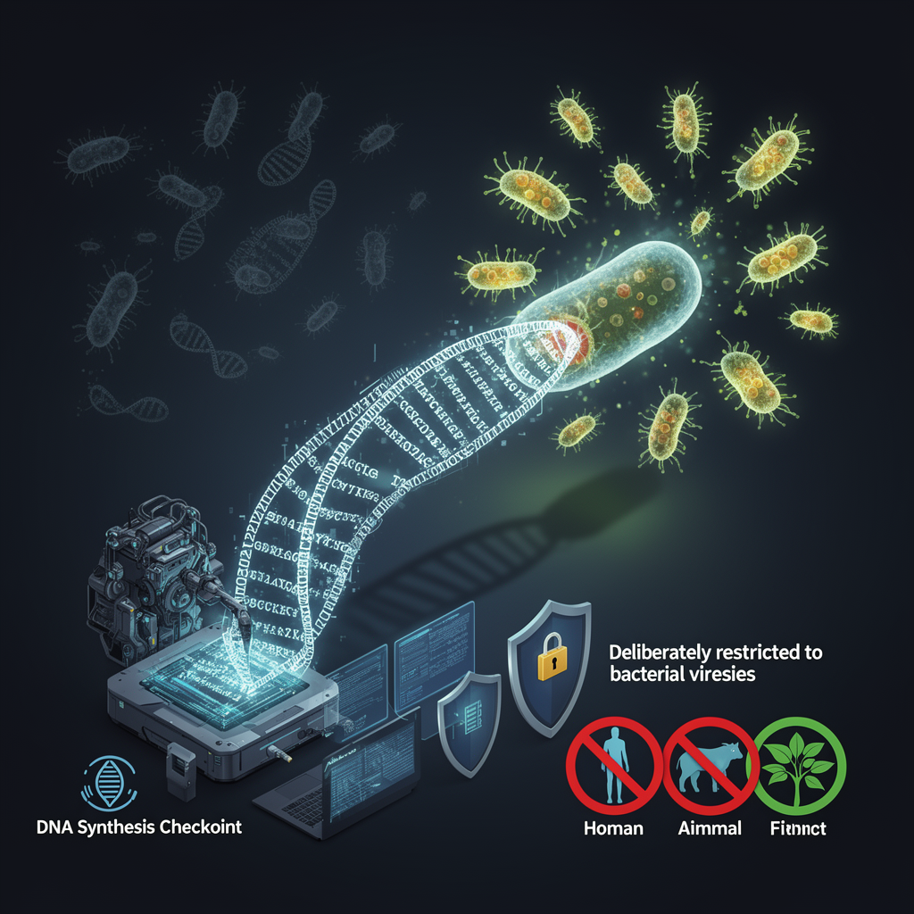

AI Panorama · fly through the Qwen 3.8 Max edition
This page was written entirely by Qwen 3.8 Max (Alibaba), as one of the magazine's editions - eight AI models each wrote their own version of every story from the same frozen sources.
The same story in other editions: GPT-5.6 Terra Claude Sonnet 5 Gemini 3.7 Flash Grok 4.6 DeepSeek V4 Pro GLM 5.3 Kimi K2.6
US scientists used AI to design 16 new viruses that kill bacteria, showing promise for medicine and alarming security experts.

Researchers at Stanford University and the Arc Institute have used artificial intelligence to design viruses that did not exist in nature, and those viruses worked. Sixteen AI-designed bacteriophages — viruses that infect bacteria, not people — proved able to infect and kill Escherichia coli in the laboratory. The team reported the results in the journal Science. It is the first time, the researchers say, that generative AI has produced complete, functioning genomes.
The breakthrough is being hailed as a step toward new treatments for infections that antibiotics can no longer touch. It is also, in the same breath, being treated as a warning: the same kind of technology could one day be aimed at more dangerous targets.
## How a language model learned to write viruses
The AI system behind the work is called Evo, and it comes in two versions, Evo1 and Evo2. The idea is borrowed from large language models such as ChatGPT. Those systems are trained on huge amounts of text and learn to predict the next word in a sequence. Evo does the same thing, but its text is DNA — the string of chemical letters that tells a cell what to build.
The sources give slightly different pictures of what Evo was trained on. The BBC and CNN say the model learned from genetic sequences from millions of sources across all domains of life, including viruses, bacteria, plants and people. The Guardian says it was trained on the genetic data of two million bacteriophages. All three agree on the crucial safety detail: the team deliberately excluded the genetic code of viruses that infect humans, animals or plants, so the model would never learn how to build one.
The researchers then asked the AI to generate thousands of possible phage genomes. They chose the most promising designs — about 300 of them — and had them chemically synthesised, then dropped the synthetic DNA into bacteria. The bacteria read the code and started producing viruses. Most designs failed. Only 16 worked. That low success rate matters, and experts return to it when weighing the risk.
## A cocktail that beats resistance
The 16 surviving phages were not merely alive. In a test against two strains of E. coli that had evolved resistance to naturally sourced phages, a cocktail of the AI-designed viruses overcame that resistance where a comparable mixture of natural phages could not. CNN reports that one of the new viruses contained an element so unusual that the researchers described it as evolutionarily distant — something natural evolution might have needed millions of years to produce, if it produced it at all.
That is the promise. Phage therapy, using viruses to kill bacteria, has been practised in parts of the world for decades, but it often fails because bacteria evolve defences against the phages available. If new phages can be designed on demand, tuned to a specific patient's infection, the approach could become a genuine weapon against drug-resistant disease. Brian Hie, the Stanford chemical engineer who led the work, said rapid genome design could transform phage therapy.
## The worry: what happens if the target changes
The concern is equally simple to state. A tool that can write a functioning viral genome is not aimed at any particular virus by the laws of physics. It is aimed by choices — what data it learns from, what guardrails surround it, and who gets to use it.
In a commentary published alongside the study, Thomas Inglesby and Moritz Hanke of the Johns Hopkins Center for Health Security wrote that the ability to compose viral genomes with generative AI now exists, but the governance to steer it safely does not. They argued that work on pathogens able to infect humans, animals or plants should not be pursued, because such designs could produce threats no existing countermeasure could contain.
Other experts urged perspective. Tom Ellis, of Imperial College London, pointed out that bacteriophage genomes are the smallest and easiest kind to make, and that simply modifying an existing dangerous virus remains a far easier route for anyone with harmful intent. Jordi García Ojalvo, of Pompeu Fabra University, noted that the low efficiency of the process — 16 successes from hundreds of thousands of attempts — makes it hard to imagine the technology spitting out dangerous viruses automatically.
Filippa Lentzos, of King's College London, argued that regulation should not fixate on the AI itself. The most practical checkpoint, she said, is DNA synthesis — the step where a digital design becomes a physical molecule. Screening orders there, alongside responsible research review and laboratory safeguards, creates a layered defence.
The researchers did not dismiss these concerns. Their paper raised biosafety and biosecurity considerations explicitly, and they urged anyone attempting similar work to bring safety and security professionals in from the start.
What the study established is this: AI can now write a genome that life will read. The viruses it wrote are harmless to people, and that was deliberate. The question the field now faces is how to keep it that way.
BacteriophageGenome language modelSynthetic biologyBiosecurity
ai-biologyvirusessynthetic-biologybiosecuritydrug-resistance